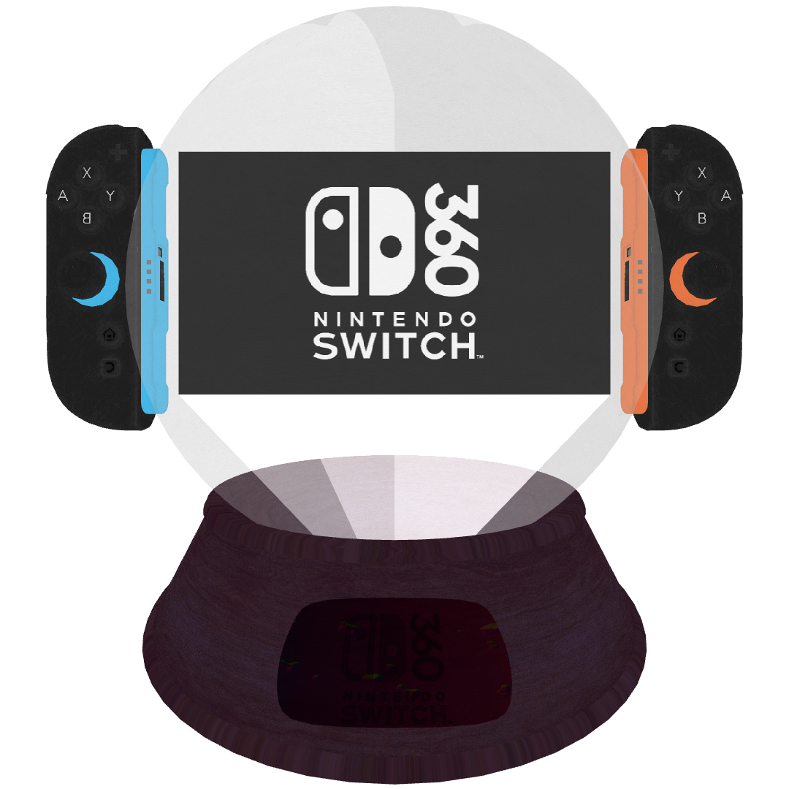
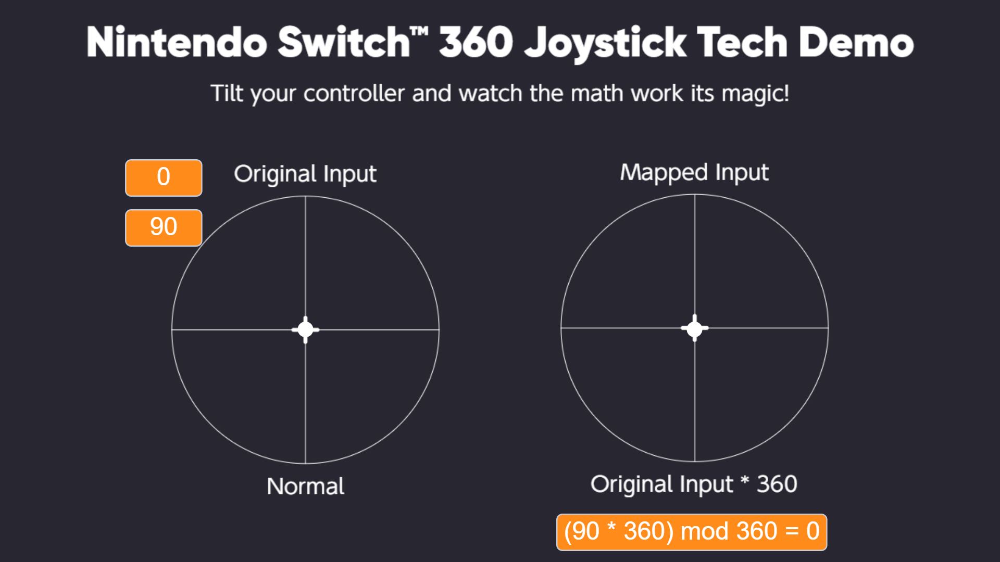

▶ DESIGN
Crystal ball form factor. Touchscreen removed because you can't touch things inside a crystal ball.
*ball is openable but still no touch support

▶ NEW JOYSTICK TECH™
All inputs multiplied by 360°. Every direction maps to exactly straight up.
← → ↑ ↓ = ↑
angle × 360 mod 360 = 0
Try out the new joystick tech demo →

▶ SKINEXT™ SENSOR
Has ALL Kinect features. Made them worse. Required for every game. Just Dance still has bad tracking.
$369 — sold separately
▶ FEATURES
Internet Browser — worse than Wii's
File Manager — can't download anything
Developer Mode — locked forever
▶ AUTO-ZIP EXTRACTOR (uses 25% of RAM)
Downloading from 'https://unforgettable.dk/42.zip'...
Extracting...
Progress: -42%
Looks like someone bricked their 360 so we wouldn't have to!
💣 ZIP Bob-ombs™ — Auto-ignite enabled
♪ ♩ ♪ ♩
At Nintendo, we believe in innovation.
And by innovation, we mean making your old problems worse and selling the solutions for more money.
PREORDER NOW
Coming whenever your dad finally comes back with the milk